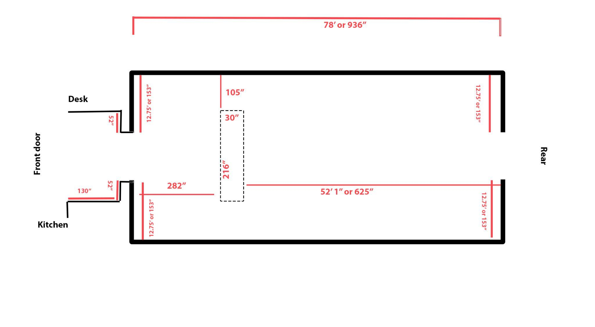
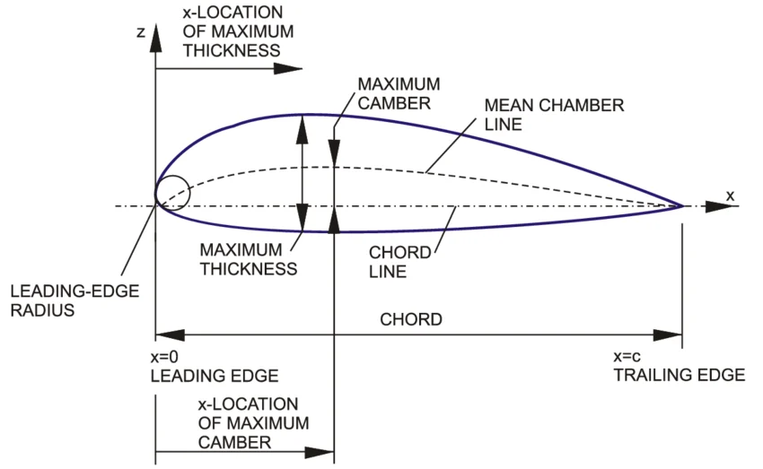
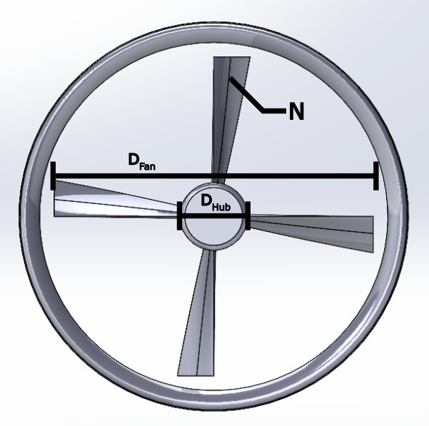
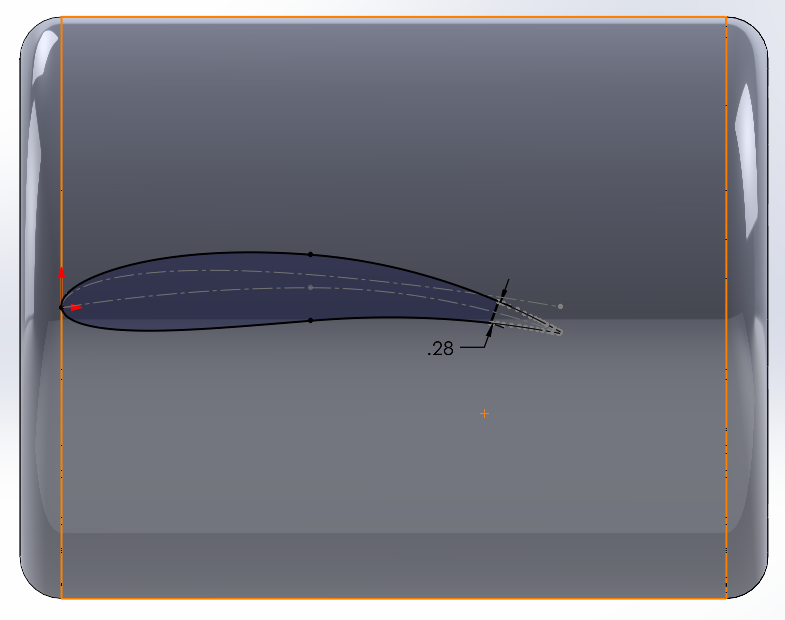
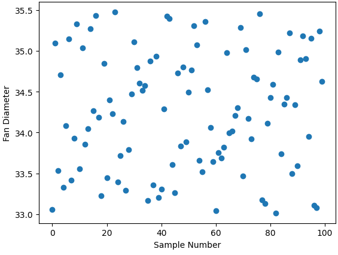
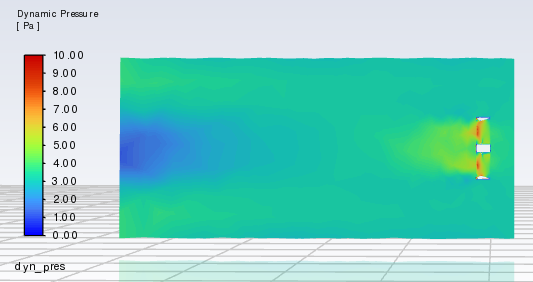

Shrouded Fan Aerodynamic Bayesian Optimization
High-dimensional optimization of a shrouded axial ceiling fan system integrating SolidWorks CAD API, ANSYS Fluent 3D CFD, Latin Hypercube Sampling, Gaussian Process surrogate models, and Bayesian Optimization.
Project Objective & Art Gallery Context
Our client, Nick Raffel, designed a custom architectural ventilation installation aiming to maximize passive airflow circulation within the GRAY Chicago art gallery. Standard commercial ceiling fans lacked optimization for high-efficiency volumetric discharge within a cylindrical shroud enclosure.
The objective was to formulate and solve a rigorous aerodynamic optimization problem maximizing volumetric flow rate (\(Q\)) while keeping fan acoustic noise and rotational motor torque constrained.


10-Dimensional Design Parameterization & Math Formulation
To allow wide variation in blade twist, taper, and cross-sectional camber while ensuring smooth manufacturable surfaces, the fan geometry was parameterized into a 10-dimensional design vector \(\mathbf{x} \in \mathbb{R}^{10}\):
Mean camber line coordinates for generalized NACA 4-digit airfoil profiles were calculated via parabolic equations:



Latin Hypercube Sampling & Gaussian Process Surrogate
Evaluating full 3D ANSYS Fluent CFD simulations takes ~25 minutes per geometry design. To efficiently search the 10D space without requiring thousands of costly CFD evaluations, we implemented a surrogate-assisted Bayesian Optimization framework:
- Latin Hypercube Sampling (LHS): Sampled initial space using
scipy.stats.qmc.LatinHypercubeto guarantee space-filling uniform coverage across all 10 bounds. - Gaussian Process (GP) Regression: Constructed a GP surrogate model with a Matérn 5/2 covariance kernel:
k(x, x') = \sigma^2 \left(1 + \frac{\sqrt{5}d}{l} + \frac{5d^2}{3l^2}\right) \exp\left(-\frac{\sqrt{5}d}{l}\right)
- Hyperparameter Tuning: Optimized length scales \(l\) using Differential Evolution to minimize negative log marginal likelihood.
- Bayesian Acquisition Function: Selected sequential evaluation points by maximizing Expected Improvement (EI):
\text{EI}(x) = (\mu(x) - f(x^+) - \xi)\Phi(Z) + \sigma(x)\phi(Z)



3D ANSYS Fluent CFD Validation
The optimal design candidate selected by Bayesian Optimization was subjected to full-mesh validation in ANSYS Fluent using the \(k\text{-}\omega \text{ SST}\) turbulence model.
Results: Physical CFD verification confirmed a maximum discharge flow rate of 21.64 m³/s, matching the Gaussian Process surrogate prediction within 1.8% error margin.